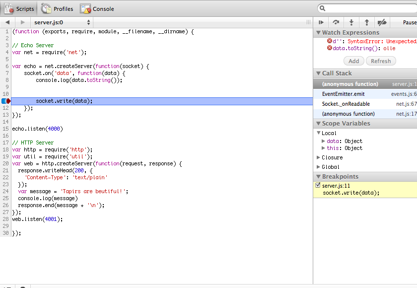

Node?
- Server Side Javascript
- Created by Ryan Dahl
- A set of libraries on top of Google V8
- Focused on doing networking right
Evented?
Event Driven
Asynchronous
Callbacks
The Event Loop
while(somethingIsGoingOn()) {
readyChannels = select(ioChannels);
for (channel in readyChannels)
performIO(channel);
}The Real Event Loop
// The Real Event Loop is implicit.
// The code is automatically inside the loop.Why Node?
Cool

Javascript
Bertrand Russell once gave a public lecture on astronomy. He described how the earth orbits around the sun and how the sun, in turn, orbits around the center of a vast collection of stars called our galaxy. At the end of the lecture, a little old lady at the back of the room got up and said: "What you have told us is rubbish. The world is really a flat plate supported on the back of a giant tortoise." The scientist gave a superior smile before replying, "What is the tortoise standing on?" "You're very clever, young man, very clever," said the old lady. "But it's turtles all the way down!"

Atwood's Law: any application that can be written
in JavaScript, will eventually be written in JavaScript.
Speed
Threads vs Evented Programming
Threaded code
var result = db.query("select * from T");
// Use resultEvented Code
db.query("select * from T", function (result) {
// Use result
});Threads
Apache
- Stack
- Context Switching
Evented
Nginx
- No Stack
- Explicit Task Switching


Single-threaded event loop
requires non-blocking IO
Most libraries aren't
Alternatives
select()(C, 1983)- Twisted (Python, 2002)
- EventMachine (Ruby, 2003)
- Goliath (Ruby, 2011)
- Async Framework (.Net, 2011)
Get Started
$ brew install node
==> Downloading http://nodejs.org/dist/node-v0.4.7.tar.gz
# ####################################################################### 100.0%
==> ./configure --prefix=/usr/local/Cellar/node/0.4.7
==> make install
==> Caveats
Please add /usr/local/lib/node to your NODE_PATH environment variable to have node libraries picked up.
==> Summary
/usr/local/Cellar/node/0.4.7: 72 files, 7.5M, built in 1.2 minutes
Idioms for Node
Callbacks
Fall Through (callbacks)
// What's wrong with this code?
function doSomething(response, callback) {
doSomeAsyncCall('abc', 123, function(err, result) {
if (err) {
callback(err);
}
callback(null, result);
});
}Fall Through (callbacks)
// Add return statements
function doSomething(response, callback) {
doSomeAsyncCall('abc', 123, function(err, result) {
if (err) {
return callback(err);
}
return callback(null, result);
});
}Exceptions
function insertIntoTable(row, callback(err, data) {
if (err) return callback(err);
...
// Everything is OK
return callback(null, 'row inserted');
}Parallel Execution
function doAll(collection, callback) {
var left = collection.length;
collection.forEach(function(fun) {
fun(function() {
if (--left == 0) callback();
});
});
};Call doAll
// How long does this code take?
var r = [];
doAll([
function(callback) {
setTimeout(function() {r.push(1); callback();}, 2000 )},
function(callback) {
setTimeout(function() {r.push(2); callback();}, 3000 )},
function(callback) {
setTimeout(function() {r.push(3); callback();}, 1000 )}
], function() { alert(r); });Sequencing
function doInSequence(collection, callback) {
var queue = collection.slice(0); // Duplicate
function iterate() {
if (queue.length === 0) return callback();
var fun = queue.splice(0, 1)[0];
fun(function(err) {
if (err) throw err;
iterate();
});
}
iterate();
};Sequencing
with tail recursion (kind of)
function doInSequence(collection, callback) {
var queue = collection.slice(0); // Duplicate
function iterate() {
if (queue.length === 0) return callback();
var fun = queue.splice(0, 1)[0];
fun(function(err) {
if (err) throw err;
process.nextTick(iterate);
});
}
iterate();
};Call doInSequence
// How long does this code take?
var r = [];
doInSequence([
function(callback) {
setTimeout(function() {r.push(1); callback();}, 2000 )},
function(callback) {
setTimeout(function() {r.push(2); callback();}, 3000 )},
function(callback) {
setTimeout(function() {r.push(3); callback();}, 1000 )}
], function() { alert(r); });async
async.map(['file1','file2','file3'], fs.stat, function(err, results){
// results is now an array of stats for each file
});
async.filter(['file1','file2','file3'], path.exists, function(results){
// results now equals an array of the existing files
});
async.parallel([
function(){ ... },
function(){ ... }
], callback);
async.series([
function(){ ... },
function(){ ... }
], callback);Modules
Modules, builtin
- net (tcp/ip)
- http (createServer, request, ...)
- util (log, pump, inherits, ...)
- fs (readFile, readdir, rename, ...)
- events (EventEmitter)
EventEmitter, usage
tapir = new Tapir();
tapir.on('eating', function(food) {
console.log('Someone fed the tapir ' + food);
});
tapir.on('error', function(error) {
console.log('What? ' + error);
});EventEmitter
var events = require('events');
var util = require('util');
Tapir = function() {
this.eat = function(food) {
if (isMeat(food))
this.emit('error', new Error("I'm a vegetarian"));
else
this.emit('eating', food);
}
};
// Set EventEmitter as Tapir's prototype
util.inherits(Tapir, events.EventEmitter);Modules, writing
// module tapir.js
// require another module
var util = require('util');
function eat(food) {
util.log('eating '+ food);
}
// export a function
exports.eat = eat;Modules, how?
var tapir = require('tapir');
// This happens inside require
var module = { exports: {}};
(function(module, exports){
// This is where your code goes
...
})(module, module.exports);npm, Node Package Manager
$ curl http://npmjs.org/install.sh | sh
$ npm install -g express
mime@1.2.1 /usr/local/lib/node_modules/express/node_modules/mime
connect@1.4.0 /usr/local/lib/node_modules/express/node_modules/connect
qs@0.1.0 /usr/local/lib/node_modules/express/node_modules/qs
/usr/local/bin/express -> /usr/local/lib/node_modules/express/bin/express
express@2.3.2 /usr/local/lib/node_modules/express
Node Module Repository
- http://search.npmjs.org
- ~1800 modules (May, 2011)
- ~3700 modules (Sept, 2011)
- ~8000 modules (March, 2012)
Notable External Modules
Express
Sinatra for Node
var app = express.createServer();
app.listen(4000);
app.get('/', function(req, req) {
res.redirect('/index.html');
});
app.put('/animals/:id', function(req, res) {
res.send(Animal.update(req.params.id));
});Connect
Rack for Node (middleware framework)
connect(
connect.logger()
, connect.static(__dirname)
, connect.compiler({enable: ['sass', 'coffeescript']})
, connect.profiler()
, everyauth.middleware()
).listen(3000);Request
HTTP Client
var request = require('request');
request('http://anders.janmyr.com',
function(err, resp, body) {
if (!err && resp.statusCode === 200)
console.log(body);
})Templating Engines
- Jade - Haml with JS flavor
- Mu - Mustache for Node
- ejs - Embedded Javascript
- eco - Embedded Coffeescript
- +40 others
Jade
!!! 5
html(lang="en")
head
title= pageTitle
script(type='text/javascript')
if (foo) {
bar()
}
body
h1 Jade - node template engine
#container
- if (youAreUsingJade)
p You are amazing
- else
p Get on it!Socket.IO
Websockets and more
var http = require('http');
var io = require('socket.io');
server = http.createServer(function(req, res){...});
server.listen(80);
// socket.io attaches to an existing server
var socket = io.listen(server);
socket.on('connection', function(client){
// new client is here!
client.on('message', function(){ … })
client.on('disconnect', function(){ … })
});DB (MySql, Postgres, Oracle)
client.query(
'SELECT * FROM ' + TEST_TABLE,
function(err, results, fields) {
if (err) { throw err; }
console.log(results);
console.log(fields);
client.end();
}
);NOSQL (MongoDB, CouchDB, Redis, Cassandra, Memcached, Hadoop, ...)
// MongoDB
var mongodb = require('mongodb');
var server = new mongodb.Server("127.0.0.1", 27017, {});
var client = new mongodb.Db('test', server, {});
client.open(function (error, client) {
if (error) throw error;
var coll= new mongodb.Collection(client, 'documents');
coll.find({}, {limit:10}).toArray(function(err, docs) {
console.dir(docs);
});
});DNode Server
var dnode = require('dnode');
var server = dnode({
zing : function (n, callback) {
callback(n * 100);
}
});
server.listen(5050);DNode Client
var dnode = require('dnode');
dnode.connect(5050, function (remote) {
remote.zing(66, function (n) {
console.log('n = ' + n);
// Prints n = 6600;
});
});Tower.js (Rails for Node)
- MongoDB (database)
- Redis (background jobs)
- CoffeeScript
- Stylus
- Jasmine (tests)
- jQuery
Trello
- Node.js
- Express
MongoDB
jQuery
- Backbone
- Mustache
Testing with Node
Assert
Built into the framework
assert.ok(value, [message]);
assert.equal(actual, expected, [message])
assert.notEqual(actual, expected, [message])
assert.deepEqual(actual, expected, [message])
assert.strictEqual(actual, expected, [message])
assert.ifError(value)
assert.fail(actual, expected, message, operator)
assert.doesNotThrow(block, [error], [message])
assert.throws(block, [error], [message])Test Frameworks
- nodeunit
- jasmine
- vows
- qunit
- +50 others
NodeUnit
// ./test/test-doubled.js
var doubled = require('../lib/doubled');
exports['calculate'] = function (test) {
test.equal(doubled.calculate(2), 4);
test.done();
};NodeUnit (running)
$ nodeunit test
test-doubled
✔ calculate
OK: 1 assertions (3ms)
NodeUnit (async)
exports['read a number'] = function (test) {
test.expect(1); // Make sure the assertion is run
// Mock stdin and exit
var ev = new events.EventEmitter();
process.openStdin = function () { return ev; };
process.exit = test.done;
// Setup the expectation
console.log = function (str) {
test.equal(str, 'Doubled: 24');
};
// Perform the action
doubled.read();
// Simulate 12 entered on stdin
ev.emit('data', '12');
};Tools
Reloaders
$ npm install nodemon
nodemon@0.3.2 ../node_modules/nodemon
$ nodemon server.js
30 Apr 08:21:23 - [nodemon] running server.js
...
# Saving the file
30 Apr 08:22:01 - [nodemon] restarting due to changes...
# Alternatives
# forever supervisor
$ npm install forever
$ npm install supervisor
Debugging
node debug
$ node debug server.js
debug> run
debugger listening on port 5858
connecting...ok
break in #<Socket> ./server.js:9
debugger;
debug> p data.toString();
tapir
// Javascript
var echo = net.createServer(function(socket) {
socket.on('data', function(data) {
debugger; // <= break into debugger
socket.write(data);
});
});
node-inspector
$ node-inspector &
visit http://0.0.0.0:8080/debug?port=5858 to start debugging
$ node --debug server.js
debugger listening on port 5858
node-inspector

Deployment
Heroku
$ heroku create APP_NAME --stack cedar
$ cat Procfile
web: node lib/app.js
$ cat package.json
{ "name":"pinga",
"version":"0.0.1",
"dependencies":{ "express":"","request":"", "nodemailer":"" }
}
$ git push heroku master
...
-----> Installing dependencies with npm 1.0.8
Procfile declares types -> web
-----> Launching... done, v27
Cloud Foundry
$ npm install express # Install locally
mime@1.2.1 ./node_modules/express/node_modules/mime
connect@1.4.0 ./node_modules/express/node_modules/connect
qs@0.1.0 ./node_modules/express/node_modules/qs
express@2.3.0 ./node_modules/express
$ vmc push
Would you like to deploy from the current directory? [Yn]: Y
Application Name: snake
Application Deployed URL: 'snake.cloudfoundry.com'?
Detected a Node.js Application, is this correct? [Yn]:
Memory Reservation [Default:64M] (64M, 128M, 256M, 512M, 1G or 2G)
Creating Application: OK
Would you like to bind any services to 'snake'? [yN]:
Uploading Application:
Checking for available resources: OK
Packing application: OK
Uploading (1K): OK
Push Status: OK
Staging Application: OK
Starting Application: ........OK
Hosting yourself
- Run it behind nginx
- Listen for errors
- Use a process monitor (forever, supervisor, god, ...)
Thank You!
- Blog, http://goo.gl/W33ko
- Slides, http://goo.gl/bqJD9
- anders.janmyr@jayway.com
- @andersjanmyr